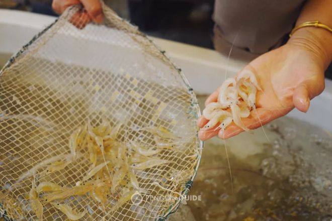
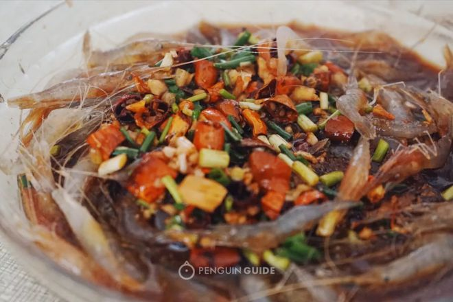

太湖白虾：清《太湖备考》上有“太湖白虾甲天下，熟时色仍洁白”的记载。白虾壳薄、肉嫩、味鲜美，是人民喜爱的水产品。用白虾做的“醉虾”放在桌上，虾还在蹦跳，吃在嘴里，奇嫩异常，鲜美无比。白虾剥虾仁出肉率高，还可加工成虾干，去皮后便是“湖开”。虾还可入药。内服有托里解毒之功能，酒后喝一碗虾米汤，顿觉肠胃舒适，美味不尽。
白虾又名太湖秀丽长臂虾，俗称“水晶虾”（白泥虾），太湖著名水产。肉质细嫩鲜美，营养价值甚高。据科学分析，每100克食用虾中，含蛋白质20.6克，脂肪0.7克，水77克以及钙、鳞、铁、无机盐和维生素A等多种营养成分。白虾是水生甲壳动物，属甲壳纲，十足目，长尾亚目，长臂虾科。属淡水虾类，白虾壳薄，生时通体透明、晶莹如玉，略见棕色斑纹，死后变白色，因此得名。
 太湖白虾：头有须，胸有爪，两眼突出，尾成叉形，大多生长在水草繁茂、风平浪静的开阔浅滩处，其食性是以植物碎片、有机残渣和弱小无脊椎浮游生物为主要食料。生长期一般为一年左右。白虾没有专门汛期，每年五月到七月中下旬，是白虾产卵旺季。也是捕捞旺季，此时的虾腹中虾籽饱满，渔民称“蚕子虾”。
白虾壳薄、肉嫩、味鲜美，是人民喜爱的水产品。 白虾的吃法很多，名目繁多，各有特色，鲜食有盐水、油爆、虾片、虾仁、虾圆、虾卷、虾仁可做成虾仁炒蛋、虾仁羹汤、石榴虾仁、碧螺虾仁、用作配料的菜则更是不胜枚举：虾肉馄饨、饺子、馒头、虾绒蛋球、虾珠鲫鱼、荠菜虾饼、孔雀虾蟹等百十道名菜。我国民间久有“死虾泛红”之说，太湖白虾却不然，烧熟也不变红，浑身依然白色。在国际市场上，太湖虾米被奉为水产珍品，供不应求，往往作为主菜的高级佐料。